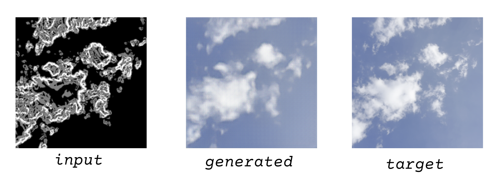
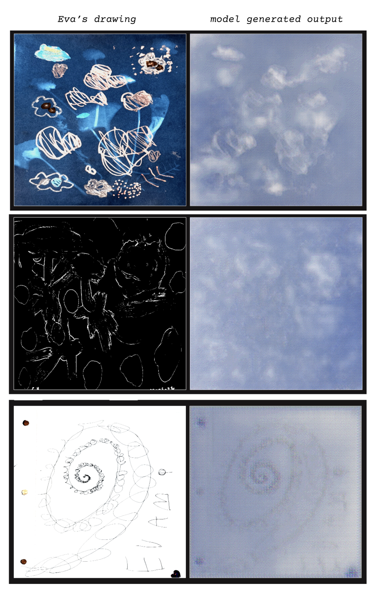

Lauren Malkani
Can we use AI to see the world like a child?
The class asks how handmade datasets can help us understand AI and disrupt its traditional use case as a corporate enhancement to productivity and efficiency.
For me these questions are hyper-personal, so I looked to my daily life to create a dataset that was whimsical and "non-data." I'm fascinated by my four-year-old daughter's view of the world: how she sees things, how she speaks, how she interprets meaning in the people, places, and objects around her.
Handmaking Data
To train the data for pix2pix, you need to model what the input might actually look like. I wanted my model to translate my daughter's drawings into clouds. Eva's drawings are mostly line-based, so I ran an edge-detection script, essentially turning all the cloud photos into line drawings, paired with the real image. This lets the pix2pix model learn to translate lines into realistic cloud images.


Once it was trained, I fed the model about 65 of my daughter's drawings that I scanned. Scanning each drawing gave me a chance to really sit with it and see the patterns in her work. Two of her favorite artists are Georgia O'Keeffe and Yayoi Kusama, and I saw many yonic forms similar to O'Keeffe's, and repetitive patterns of dots and circles that came together into complex, Kusama-esque illustrations. I noticed themes and motifs too. There were more images of houses and families, following our move across the country. Her perspective, her ideas, her influences came through in the slow, manual process of scanning the drawings.
Clouds for the Future
What I enjoyed most were the unexpected "glitches" in the clouds, and the "misinterpretation" of the drawings into cloud-like images made of thousands of dots, a result of low resolution and dithering artifacts from upscaling the GAN's image.
Another beautiful irony: the many dots that made up each image resonated deeply with my daughter, who was delighted to see her favorite Kusama-inspired motif reimagined in her own work. Though when I showed her the first few cloud outputs, she said, "they don't look like clouds at all." I do wonder if she'll imagine her drawings in the clouds when she looks up now or imagine the clusters of dots forming a line, hidden in little imaginary pixels beneath her pencil.
If nothing else, these are things that I see now.